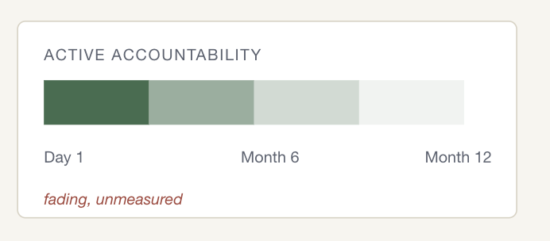

Aug 2026
The Ownership Illusion: Why an AI System Can Have an Owner and No Accountability
78% of business executives lack strong confidence they could pass an independent AI governance audit within 90 days — Grant Thornton, 2026 AI Impact Survey.
Every AI system deployed in a large organisation has an owner. That's rarely in dispute. Pull the governance register, and a name is there.
What's almost never tested is whether that ownership is still doing anything.
A name in a RACI is a record of a decision made once. It says nothing about whether anyone is still accountable for what the system is doing now, months after the launch.
This is the actual risk: ownership of an AI system decays without anyone removing it.
The record stays exactly as it was on launch day. What erodes is everything that record was supposed to represent: active governance of the model, ongoing checks on data quality, ongoing checks on performance. And it erodes silently unless someone keeps actively reviewing it.

Root cause
Accountability decay over time. Attention is concentrated entirely at launch, where the incentive to ship is strongest, and the incentive to keep watching afterwards often doesn't exist.
Once the system is live, drift becomes invisible by default. A model that's slowly degrading still produces output that looks like output, so nothing necessarily forces anyone's attention back to it.
Why this risk is specific to AI, not a general governance failure
Ownership decay isn't new. What's different with AI is that the system being governed can change underneath the owner. For a traditional IT asset, the asset itself is comparatively stable. If an owner stops paying attention, the asset doesn't necessarily change its behaviour because of that lack of attention.
An AI use case doesn't hold still. The data feeding it shifts. The underlying model gets retrained, fine-tuned, or swapped for a newer release, often by a vendor, without triggering anything that looks like a change request internally. None of this necessarily requires anyone to re-approve the use case, because these changes may not be recognised as a change to "the system" that the original owner signed off on. They are treated as normal operation.
So the gap between assigned ownership and active accountability can open quickly. And it opens invisibly, because the thing that's changing isn't the governance record. It's the system underneath the record.
What this actually costs an organisation
A model drifts and starts producing outputs that are biased, inaccurate, or simply inconsistent with its intended purpose. That behaviour may never have been approved if it had been reviewed directly.
If the organisation doesn't catch it internally, a customer complaint, a regulator's request, or an incident may be what finally brings the issue to light.
Only then does anyone ask: Who owns the system?
There is an answer. A name is on record.
But that answer provides little assurance if the named owner has not been actively accountable for the system's behaviour since the original approval was signed.
The organisation has ownership on paper, but not necessarily accountability in practice.
For any institution, this is a material governance risk, not merely a reputational inconvenience.
If a regulator asks for evidence of ongoing oversight and the organisation can only produce a launch approval, that is functionally close to having never established effective ownership at all.
A March 2026 survey of 650 enterprise technology leaders found unclear organizational ownership among the five most-cited root causes of AI pilots failing to scale to production, alongside absence of monitoring tooling, integration complexity, inconsistent output quality, and insufficient training data (Digital Applied, "AI Agent Scaling Gap," March 2026).
The diagnosis
Here's what actually happens inside many organisations.
Someone builds an AI system. Before it launches, a name gets attached to it.
What nobody checks is whether that name still means anything six months later.
Ask four questions:
- Does the person whose name is on record still hear about this system? Or did their involvement end the day they approved it?
- If they stopped performing the role, would anyone notice? Is there an escalation or review mechanism that tests whether the assigned responsibility is actually being performed?
- Was any budget, tooling, or time actually set aside to keep watching the system after launch? Or did all the resourcing go into building and shipping it?
- If that person left the company tomorrow, would the responsibility survive them? Is it formally embedded in the role, job description, performance objectives, or another mechanism that would tell their replacement the duty exists?
These questions map well to the intent of NIST CSF 2.0's GV.RR category "Roles, Responsibilities, and Authorities". It is designed to establish accountability, performance assessment, and continuous improvement. NIST's four GV.RR outcomes address leadership accountability, clearly established and enforced responsibilities, adequate resources, and the incorporation of cybersecurity into HR practices.
The important point is that a name alone doesn't demonstrate any of these outcomes.
A governance register can prove that someone was assigned. It cannot, by itself, prove that they are still accountable.
What should be in place?
Closing this gap doesn't require a new framework. It requires treating the existing governance requirements as things to verify, rather than as boxes to tick.
Concretely, that means:
- Evidence of post-launch engagement. The accountable leader should be able to point to something that happened after launch: a recurring report, a standing agenda item, a review, or another artefact showing they are still engaging with this specific system's behaviour — not just its original approval.
- A mechanism that detects inactive accountability. If the named owner stops performing the ongoing duties of the role, something should catch that: an escalation, a review, a control, or anything other than silence.
- Dedicated post-launch resources. There should be budget, tooling, or staff time for monitoring and oversight, distinct from the resources spent building and shipping the system.
- Responsibility that survives personnel changes. The ongoing responsibility should be reflected in a job description, performance objective, role definition, or equivalent HR mechanism, so it survives a reorganisation or a departure rather than disappearing with whoever originally held it.
An auditor testing this doesn't need a new methodology. They need to stop accepting a name as the whole answer.
Instead, they should ask for evidence that the ownership is active, resourced, enforced, and durable.
If that evidence comes back empty, the organisation hasn't established effective ownership.